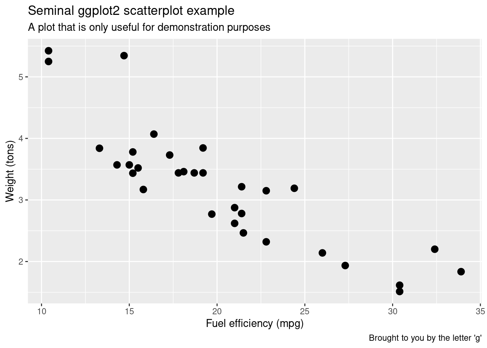
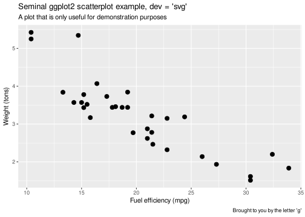
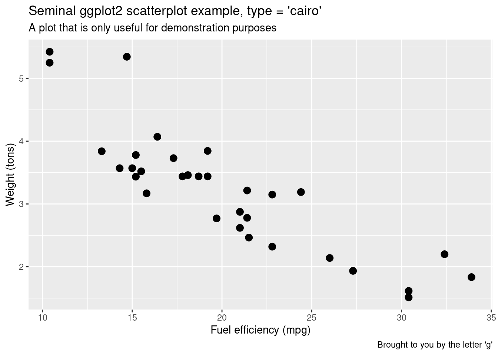
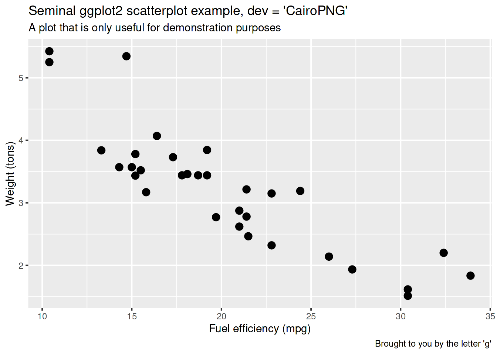
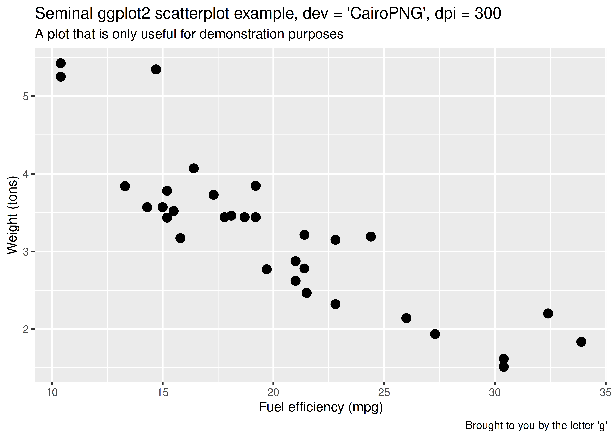

Here are some tips for getting nicer graphics in your rmarkdown outputs.
Author
Robert M Flight
Published
December 6, 2018
TL;DR
If you are getting crappy looking png images from rmarkdown html or word documents, try using type='cairo' or dev='CairoPNG' in your chunk options.
PNG Graphics??
So, I write a lot of reports using rmarkdown and knitr, and have been using knitr for quite a while. My job involves doing analyses for collaborators and communicating results. Most of the time, I will generate a pdf report, and I get beautiful graphics, thanks to the eps graphics device. However, there are times when I want to generate either word or html reports, and in those cases, I tend to get very crappy looking graphics. See this example image below:
library(ggplot2)p =ggplot(mtcars, aes(mpg, wt)) +geom_point(size =3) +labs(x="Fuel efficiency (mpg)", y="Weight (tons)",title="Seminal ggplot2 scatterplot example",subtitle="A plot that is only useful for demonstration purposes",caption="Brought to you by the letter 'g'")p

Note: This was generated on self-compiled R under Ubuntu 16.04. As we can see, knitr is using the png device, because we are generating html output.
knitr::opts_chunk$get("dev")
[1] "png"
Increased Resolution
Of course, we just need to increase the resolution! So let’s do so. Just to go whole hog on this, let’s increase it to 300!
p +ggtitle("Seminal ggplot2 scatterplot example, 300 dpi")
If you compare this one to the previous, you can see that the quality is marginally better, but doesn’t seem to be anything like what you should be able to get.
Use SVG??
Alternatively, we could tell knitr to use the svg device instead! Vector graphics always look nice!
p +ggtitle("Seminal ggplot2 scatterplot example, dev = 'svg'")

It’s so crisp! But, for word documents especially, this could be a problem, as the images might not show up. The nice thing about png is it should be usable in just about any format!
And, if you have a plot with a lot of points (> 200), the svg will start to take up some serious disk space, as every single point is encoded in the svg file. This is also a good reason to use png.
PNG via Cairo
After pulling out my hair yesterday as I tried to generate nice png images embedded in a word report (and settling on converting every figure from svg to png and saving to a folder to pass on, see this), I finally decided to try a different device.
Now, your R installation does need to have either cairo capabilities, or be able to use the Cairo package. Mine has both.
Let’s change the device (two different ways) and plot it again. First, we will still use the png device, but add the type = "cairo" argument (see ?png). Just for information, that looks like the below in the chunk options:
r plot_cairo, dev.args = list(type = "cairo")
p +ggtitle("Seminal ggplot2 scatterplot example, type = 'cairo'")

Wow! This looks great! So much nicer than the other device. Secondly, let’s use the CairoPNG device (dev = "CairoPNG")
p +ggtitle("Seminal ggplot2 scatterplot example, dev = 'CairoPNG'")

Finally, we can also increase the resolution as well.
p +ggtitle("Seminal ggplot2 scatterplot example, dev = 'CairoPNG', dpi = 300")

So there you have it. Very crisp png images, with higher resolutions if needed, and no jaggedness, without resorting to conversion via inkscape (my previous go to).
Incorporating Into Reports
As I previously mentioned, I often default to pdf reports, but will then generate a word or html report if necessary. How do you avoid changing the options even in a setup chunk if you want this to happen every time you specify word_document as the output type? This is what I settled on, the setup chunk checks the output type (based on being called from rmarkdown::render), and sets it appropriately.
if (knitr::opts_knit$get("rmarkdown.pandoc.to") !="latex") { knitr::opts_chunk$set(dpi =300, dev.args =list(type ="cairo"))})
![]()